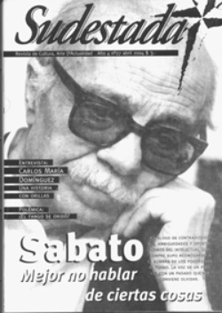

Buscar
Carlos María Domínguez "El río es una máquina compleja y fascinante"
Edición N° 27
Abril 2004
Revista bimensual
Comprar edición impresaSumario
- Ernesto Sabato: Mejor no hablar de ciertas cosas
- Llegó la hora...
- ¿El tango se oxidó?
- Carlos María Domínguez "El río es una máquina compleja y fascinante"
- Irak, o la cultura de las bombas
Compartir Articulo
Con los nubarrones oscureciendo Pocitos como telón de fondo, Sudestada conversó con el escritor argentino instalado en Montevideo desde finales de los ochenta. Autor de una de las mejores novelas de los últimos tiempos (Tres muescas en mi carabina), Domínguez nos llevó de viaje por los secretos de un río interminable y traicionero y los de su gente.
Después de varios días de calor agobiante, la tormenta se iba dibujante lentamente en el horizonte de Montevideo, por fin. Se venía el agua y un rato antes que ella, llegamos nosotros a la casa de Carlos María Domínguez en las afueras de Montevideo. Y sin movernos de allí, echamos un vistazo a las historias del río que Domínguez conoce como un erudito, al presente de la literatura argentina mirada desde la orilla de enfrente, al recuerdo inalterable del gran Haroldo Conti y los pasillos más oscuros de nuestra gente, los de una Buenos Aires que «se mira el ombligo», y los de allí nomás, esos que viven fuera de la ley menos preocupados por las noticias del día que por saber los vientos que lleva la corriente mañanera.
Hablando de Tres muescas en mi carabina, tu último libro editado en Argentina ¿de dónde sacaste los primeros datos?
Es una historia curiosa. Tiene como antecedente a Haroldo Conti, cuando editó La balada del álamo Carolina en 1975, donde había un homenaje a doña Julia, la patrona de la isla Juncal en las páginas finales.
Una vuelta, estando ya en Montevideo, me invitaron a dar una charla en la Biblioteca del Cerro, cuando habíamos hecho con María Esther Gilio la biografía de Juan Carlos Onetti, Construcción de la noche. Ahí, el poeta Edgar Silva me presentó a Ramón Báez, un uruguayo que vive en el Cerro, oriundo de Carmelo. Fuimos a tomar unos tragos a su casa y me contó que dos de sus primos hacían contrabando de nazis por la Juncal. Entonces me acordé del texto de Haroldo y lo releí esa misma noche; y bueno, en ese texto daba una serie de nombres que todos los 19 de julio cuando la vieja (Julia Lafranconi) cumplía años iban a festejarle tres días de joda a la isla. Entonces con esos nombres me fui a Carmelo y a Nueva Palmira a ver si existían. Algunos habían fallecido, pero estaban los parientes.
Todos conocían quién era Julia. Era pasar de la literatura a la realidad. Uno me dijo que fuera al cementerio de Carmelo, donde estaba la tumba de Julia. El cuidador del cementerio encontró la puerta media abierta, la pateó y salió con la urna de la vieja, la abrió y me puso la calavera de la vieja en la mano. Así que fue como un shock. De esa manera tan shakespereana entré al mundo de la Juncal. Y a partir de la investigación fui encontrando los caminos para hallar personajes, reconstruir la historia, todo lo que Haroldo no había contado en su momento, porque desde luego la vieja vivía entonces, y él la iba a ver cada tanto. Ahí conté simultáneamente la historia de la fundación de la Juncal, del padre de Julia, Enrique, y la negra María con su historia, mezclando la realidad con la ficción.
Muchos elementos de la escritura responden a la imaginación y otros son verídicos. Eso fue lo que motivó la manera de acercarme a la historia, siempre sintiéndo la compañía de Haroldo, un escritor que yo admiro y quiero mucho, fue como un faro en esa búsqueda. Ramón Báez, un hombre que llegó a nadar con Tarzán, es decir con Johnny Weissmuller, me introdujo a la vida de Carmelo de una manera particular, de primera mano, porque cuando él era chiquilín iba a la isla nadando casi todos los días. A los cinco años cruzaban el Río de la Plata, arriba de camalotes y usando la correntada del Uruguay llegaban a la isla, y luego con la corriente inversa se volvían a la tarde. La vieja Julia les daba de comer. Después los primos de él que se dedicaban al contrabando lo hacían todo por ahí, hasta pasaron muchos nazis, ese fue el comienzo de la historia.
¿Te apasionan las historias del Río de la Plata?
Sí, viste que Buenos Aires crece de espaldas al río, es una ciudad que le da la espalda, y cree conocerlo. En realidad cuando crucé de orilla del lado uruguayo me di cuenta que no conocemos un carajo al río, que es como una máquina compleja y fascinante, y a tal punto todavía sigo metido en el agua que los prácticos del puerto de Montevideo me encargaron un libro para que cuente cómo trabajan. Ellos son lo que entran los grandes buques al estuario, los grandes contenedores, los cargueros. Lo acabo de terminar y creo va a salir este año.
Estando adentro del río te das cuenta que es una maquinaria muy espesa, te das cuenta porqué lo llaman el infierno de los navegantes, esa cosa de la cual se reía de alguna manera Saer, asumiendo una risa muy argentina. Porque, claro: se supone que un río bajo no puede ser un infierno para los navegantes; y sin embargo hay cientos de barcos hundidos, que lo hacen muy peligroso. En realidad es un río de ilusiones, no sólo porque está condenado a desaparecer en gran parte, sino porque además de ser el río más ancho del mundo, para navegar es el más estrecho.
¿Cruzando a Montevideo te diste cuenta quiénes conocían la verdadera historia del río?
Yo me hago cargo que como argentino desconocía toda esa realidad. Siempre me crié cerca del Río de la Plata, siempre estuve cerca del agua. Desde el lado de Buenos Aires es un río que se ve siempre color melena de león, del que hablaba Lugones, ese color barroso, ladrillo. Sin embargo, vos de acá ves que el río tiene muchos colores.
Es un río de tres colores: en la bahía de Montevideo cuando descarga el Uruguay, como arrastra tierras negras, se pone pardo y agrisado; cuando descarga el Paraná, que arrastra tierras rojas, se pone de ese color melena de león, ladrillo; y cuando entra al mar se pone verde o azul. Es un río que no crece tanto por las lluvias y sí cuando lo empuja el viento del sur. Hay una sudestada en el mar y es como si le pusieran un tapón a una botella.
Corre la sudestada y el río se vacía de nuevo. Muchos barcos que entran después se quedan sin agua para salir y tienen que esperar otra sudestada que vuelva a subir el nivel de las aguas y rajarse lo antes posible, apurados, uno detrás de otro para que no vuelvan a quedarse atrapados. El régimen de los isleños y sus costas es un mundo, un mundo muy particular, muy sin ley, muy cerca de dos metrópolis como Buenos Aires y Montevideo, y sin embargo rige la ley de las armas, la ley salvaje, que de alguna manera la novela en cierta forma refleja. Encontré muchos personajes en la costa, contrabandistas, cazadores furtivos, gente que vive en una marginalidad como si estuviera en África.
(La nota completa en Sudestada 27, edición gráfica)
Comentarios
Carlos María Domínguez
Articulos más vistos


LIBRERÍA SUDESTADA

Colección infantil

Distribuidora de Libros

Suscripción

Sudestada en URUGUAY

Otros articulos de esta edición
Ernesto Sabato: Mejor no hablar de ciertas cosas
Breve recorrida por el mapa de contradicciones, ambiguedades e hipocresías del escritor Ernesto Sabato durante los años más oscuros de ...